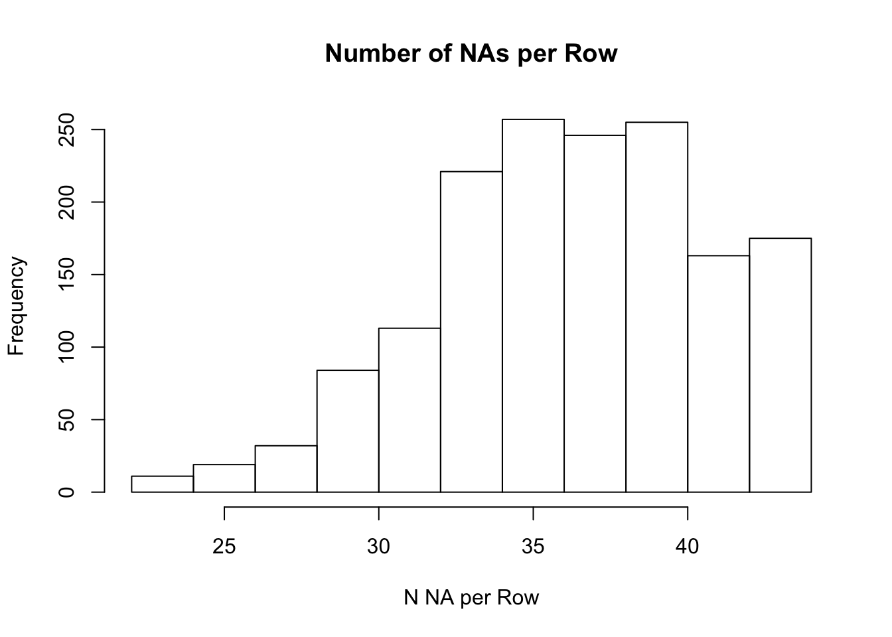

Overview
It is rarely ever the case that one receives a data set that is read to use for one’s purposes. Here, we will practice a few tricks in R to clean up a data set. Different data sets come with different issues of course, but hopefully this tutorial will:
In particular, we will use the readxl and tidyverse packages. The first is a great resource to read in .xlsx files, while the latter helps us clean data, in particular by providing tools to clean up column names. The third package we are loading in here is here - ignore this for now, we will revisit it in the session on R Markdown.
Go ahead and download the dataset associated with the Baker (2016) paper ‘1,500 scientists lift the lid on reproducibility’. Place the data in a folder called data. Now create an R scripts to start cleaning your data.
Start by loading in the following packages:
library(readxl)
library(tidyverse)
library(here) The first thing we will have noticed upon downloading the data is the spaces in the file name which should make the hair stand up on the back of your neck! We’ll deal with that in a moment!
First of all, let’s read in the data and inspect it a little:
data_dirty <- read_excel(here("data/Reproducibility Survey Raw Data.xlsx"))## Warning in read_fun(path = enc2native(normalizePath(path)), sheet_i = sheet, :
## Expecting logical in CZ1141 / R1141C104: got 'any'If you run View(data_dirty) a few things you may notice:
None of those makes us happy. Remember that you can access column names using:
colnames(data_dirty)Now you will have noticed the column names are split across two rows.
Excel files often have weird formatting issues, column names being split across rows being only one of them. Other issues you may encounter with excel files is that people may have used the first few rows of the file to provide information on their data. You can deal with that by not reading in the first N rows of a file, using read_excel(..., skip=N). Fortunately, we don’t need that here, so back to topic:
Let’s find the column for which important information is included int he second row:
replace_idx = which(!is.na(data_dirty[1,]))We can now use this index to copy over the information from the second row to the column names.
colnames(data_dirty)[replace_idx] <- data_dirty[1,replace_idx]
data_clean <- data_dirty[-1,]One thing I’d always suggest when you have several columns that are related to each other in some way is to have a common column identifier. This makes data reformatting much easier! Here, we will add the prefix published manuscript to all columns relating to ‘Have you published a manuscript in the past 3 years?’.
colnames(data_clean)[c(7,8,9)] <- paste0('published_manuscript-',colnames(data_clean)[c(7,8,9)])You could go ahead and add other prefixed to the other columns we just edited.
Another common task in cleaning your data may be to tidy up column names. In this case, we may want to replace all spaces in column names by underscores and make the column names all lower case. With different data, you may come across different problems, but hopefully this helps you get an idea of how to approach the problem of renaming column names.
We will get rid of the spaces in the column names and make the column names all lower case.
We will use the %>% operator from dplyr, which conveniently is included in tidverse. If you haven’t used this operator before, have a look at these resources.
colnames(data_clean) <- colnames(data_clean) %>%
str_replace_all("\\s", "_") %>% # remove spaces
str_replace_all("\"", "") %>% # remove backslashed
str_replace_all(",", "") %>% # remove commas
tolower() # all lower caseThe stringr package included in tidyverse is a great tool to reformat your column names (and any other strings). To apply it more generally to your data, check out their cheatsheet.
Lastly, as a quick check, let’s make sure we don’t have any empty rows in our data. I am just quickly plotting the number of NA per row.
hist(rowSums(is.na(data_clean)), main='Number of NAs per Row',xlab='N NA per Row')
If you have a look at the questions, some are not meant to be answered by all participants, so the fact that we see a number of outliers per subject here isn’t super concerning. All I wanted to know here is that we don’t have data entry problems where complete rows are empty. Looks like we are all good!
Lastly, let’s save a clean version of our data. This will be the version we could work on from now on. As a rule, never make changes/overwrite your raw data. Always save the cleaned version as a new file.
write.csv(data_clean, file=here('data/data_clean.csv'), row.names = F)Summary
Learn what copyright permissions you can use to publish your data, code and tools by having a look at creative commons licenses.